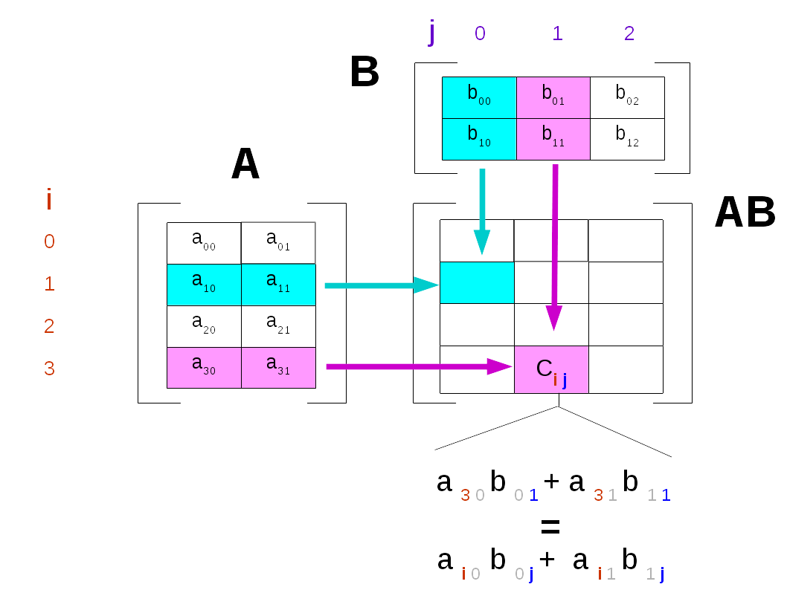

Matrici - Liste di liste¶
Scarica zip esercizi¶
ATTENZIONE
Gli esercizi che seguono contengono dei test con gli assert. Per capire come svolgerli, leggi prima Gestione errori e testing
Introduzione¶
Ci sono sostanzialmente due modi in Python di rappresentare matrici: come liste di liste, oppure con la libreria esterna numpy. La più usata è sicuramente numpy ma noi le tratteremo comunque entrambi i modi. Vediamo il motivo e le principali differenze:
Liste di liste - esercizi in questo foglio:
native in Python
non efficienti
le liste sono pervasive in Python, probabilmente incontrerai matrici espresse come liste di liste in ogni caso
forniscono un’idea di come costruire una struttura dati annidata
possono servire per comprendere concetti importanti come puntatori alla memoria e copie
Numpy - vedere foglio separato Matrici Numpy:
non nativamente disponibile in Python
efficiente
alla base di parecchie librerie di calcolo scientifico (scipy, pandas)
la sintassi per accedere agli elementi è lievemente diversa da quella delle liste di liste
in alcuni rari casi potrebbe portare problemi di installazione e/o conflitti (l’implementazione non è puro Python)
Che fare¶
scompatta lo zip in una cartella, dovresti ottenere qualcosa del genere:
matrices-lists
matrices-lists.ipynb
matrices-lists-sol.ipynb
jupman.py
ATTENZIONE: Per essere visualizzato correttamente, il file del notebook DEVE essere nella cartella szippata.
apri il Jupyter Notebook da quella cartella. Due cose dovrebbero aprirsi, prima una console e poi un browser. Il browser dovrebbe mostrare una lista di file: naviga la lista e apri il notebook
matrices-lists.ipynbProsegui leggendo il file degli esercizi, ogni tanto al suo interno troverai delle scritte ESERCIZIO, che ti chiederanno di scrivere dei comandi Python nelle celle successive. Gli esercizi sono graduati per difficoltà, da una stellina ✪ a quattro ✪✪✪✪
ATTENZIONE: Ricordati di eseguire sempre la prima cella dentro il notebook. Contiene delle istruzioni come import jupman che dicono a Python quali moduli servono e dove trovarli. Per eseguirla, vedi le seguenti scorciatoie
Scorciatoie da tastiera:
Per eseguire il codice Python dentro una cella di Jupyter, premi
Control+InvioPer eseguire il codice Python dentro una cella di Jupyter E selezionare la cella seguente, premi
Shift+InvioPer eseguire il codice Python dentro una cella di Jupyter E creare una nuova cella subito dopo, premi
Alt+InvioSe per caso il Notebook sembra inchiodato, prova a selezionare
Kernel -> Restart
Vediamo queste liste di liste. Per esempio, possiamo considerare la seguente matrice con 3 righe e 2 colonne, in breve una matrice 3x2:
[2]:
m = [
['a','b'],
['c','d'],
['a','e']
]
Per convenienza, assumiamo come input per le nostre funzioni non ci saranno matrici senza righe, o righe senza colonne.
Tornando all’esempio, in pratica abbiamo una grande matrice esterna:
m = [
]
e ciascuno dei suoi elementi è un’altra lista che rappresenta una riga:
m = [
['a','b'],
['c','d'],
['a','e']
]
Quindi, per accedere la prima riga['a','b'], semplicemente accediamo all’elemento all’indice 0 della lista esterna m:
[3]:
m[0]
[3]:
['a', 'b']
Per accedere alla seconda riga intera ['c','d'], accediamo all’elemento avete indice 1 della lista esterna m:
[4]:
m[1]
[4]:
['c', 'd']
Per accedere alla terza riga intera ['c', 'd'], accediamo all’elemento ad indice 2 della lista esterna m:
[5]:
m[2]
[5]:
['a', 'e']
Per accedere al primo elemento 'a' della prima riga ['a','b'] aggiungiamo un altro cosiddetto “subscript operator” con indice 0:
[6]:
m[0][0]
[6]:
'a'
Per accedere il secondo elemento 'b' della prima riga ['a','b'] usiamo invece indice 1 :
[7]:
m[0][1]
[7]:
'b'
ATTENZIONE: Quando una matrice è una lista di liste, puoi solo accedere valori con notazione m[i][j], NON con m[i,j] !!
[8]:
# scrivi qui la notazione sbagliata m[0,0] e guarda che errore ottieni:
Adesso implementa le funzioni seguenti.
RICORDA: se la cella è eseguita e non succede niente, è perchè tutti i test degli assert sono passati ! In questo caso il tuo codice è probabilmente corretto ma attenzione, questo tipo di test non sono mai esaustivi perciò potrebbero comunque esserci errori.
III COMANDAMENTO: Non riassegnerai mai parametri di funzione
VI COMANDAMENTO: Userai il comando return solo se vedi scritto “return” nella descrizione della funzione!
Dimensioni della matrice¶
✪ ESERCIZIO: Per prendere le dimensioni della matrice, possiamo usare normali operazioni su lista. Quali? Puoi assumere che la matrice sia ben formata (tutte le right hanno lunghezza uguale) e almeno una riga e almeno una colonna.
[9]:
m = [
['a','b'],
['c','d'],
['a','e']
]
[10]:
# scrivi qui il codice per stampare righe e colonne
righe
3
colonne
2
Estrarre righe e colonne¶
Come estrarre una riga¶
Una delle prime cose che potresti voler fare è estrarre la riga i-esima. Se stai implementando una funzione che fa questo, hai in sostanza due scelte:
ritornare un puntatore alla riga originale
ritornare una copia della riga
Dato che copiare consuma memoria, perchè vorresti mai ritornare una copia ? A volte dovresti perchè non sai quale uso verrà fatto della struttura dati. Per esempio, supponi di avere un libro di esercizi che ha spazi vuoti dove scrivere gli esercizi. E’ un libro eccellente, e tutti in classe lo vogliono leggere - ma tu sei preoccupato perchè se il libro comincia a cambiare mani qualche studente poco scrupoloso potrebbe scriverci sopra. Per evitare problemi, fai una copia del libro e la distribuisci (tralasciamo considerazioni sulla violazione del copyright :-)
Estrarre puntatori¶
Prima vediamo cosa succede quando ritorni semplicemente un puntatore alla riga originale.
NOTA: Per convenienza, alla fine della cella mettiamo una chiamata magica a jupman.pytut() che mostra l’esecuzione di codice come in Python tutor (per info addizionali su jupman.pytut(), vedere qua). Se esegui tutto il codice in Python Tutor, vedrai che alla fine hai due puntatori freccia alla riga ['a','b'], uno che parte dalla lista m e uno dalla variabile riga.
[12]:
def esrigap(mat, i):
""" RITORNA la riga i-esima da mat
"""
return mat[i]
m = [
['a','b'],
['c','d'],
['a','e']
]
riga = esrigap(m, 0)
jupman.pytut()
[12]:
Estrai riga con for¶
Cercheremo di implementare una versione che ritorna una copia della riga.
DOMANDA: Per farlo, potresti essere tentato di scrivere qualcosa del genere - ma non funzionerebbe. Perchè?
[13]:
# ATTENZIONE: CODICE SBAGLIATO!!!!
def esriga_sbagliata(mat, i):
""" RITORNA la i-esima riga da mat. NOTA: la riga DEVE essere in una nuova lista ! """
riga = []
riga.append(mat[i])
return riga
m = [ ['a','b'],
['c','d'],
['a','e'] ]
riga = esriga_sbagliata(m,0)
jupman.pytut()
[13]:
Puoi costruire una copia in diversi modi, con un for, una slice o una list comprehension. Prova ad implementare tutte le versioni, cominciando con il for qui. Assicurati di controllare il risultato con Python tutor - per visualizzare Python tutor nell’output di una cella puoi usare il comando speciale jupman.pytut() alla fine della cella come abbiamo fatto prima. In Python tutor, dovresti vedere solo una freccia che va dalla riga originale ['a','b'] in m, e ci dovrebbe
essere un’altra copia ['a','b'] da qualche parte, con la variabile with riga che ci punta.
✪ ESERCIZIO: Implementa la funzione esrigaf, che RITORNA la i-esima riga da mat
NOTA: la riga DEVE essere una nuova lista! Per creare una nuova lista usa un ciclo for che reitera sugli elementi, non gli indici (quindi non usare range) !
[14]:
def esrigaf(mat, i):
raise Exception('TODO IMPLEMENT ME !')
m = [ ['a','b'],
['c','d'],
['a','e'] ]
assert esrigaf(m, 0) == ['a','b']
assert esrigaf(m, 1) == ['c','d']
assert esrigaf(m, 2) == ['a','e']
# controlla che non abbia cambiato la matrice originale!
r = esrigaf(m, 0)
r[0] = 'z'
assert m[0][0] == 'a'
# togli il commento se vuoi visualizzare l'esecuzione qui
#jupman.pytut()
Estrai riga con range¶
Vediamo velocemente range(n). Forse pensi che debba ritornare una sequenza di interi, da zero a n - 1. E’ davvero così?
[15]:
range(5)
[15]:
range(0, 5)
Forse ti aspettavi qualcosa come una lista [0,1,2,3,4], invece abbiamo scoperto che Python è piuttosto pigro qua: range(n) di fatto ritorna un oggetto iterabile, non una sequenza reale materializzata in memoria.
Per prendere una vera lista di interi, dobbiamo chiedere esplicitamente questo oggetto iterabile che ci da gli oggetti uno per uno.
Quando scrivi for i in range(5) il ciclo for sta facendo esattamente questo, ad ogni round chiede all’oggetto range di generare un numero nella sequenza. Se vogliamo l’intera sequenza materializzata in memoria, possiamo generarla convertendo il range in un oggetto lista:
[16]:
list(range(5))
[16]:
[0, 1, 2, 3, 4]
Sii prudente, comunque. A seconda della dimensione della sequenza, questo potrebbe essere pericoloso. Una lista di un miliardo di elementi potrebbe saturare la RAM del tuo computer (i portatili nel 2018 hanno spesso 4 gigabyte di memoria RAM, cioè 4 miliardi di byte).
✪ Adesso implementa la funzione esrigar, che RITORNA la i-esima riga da mat, iterando su un range di indici di colonna
NOTA 1: la riga DEVE essere una nuova lista! Per creare una nuova lista usa un ciclo
forNOTA 2: ricordati di usare un nuovo nome per l’indice di colonna!
[17]:
def esrigar(mat, i):
raise Exception('TODO IMPLEMENT ME !')
m = [
['a','b'],
['c','d'],
['a','e'],
]
assert esrigar(m, 0) == ['a','b']
assert esrigar(m, 1) == ['c','d']
assert esrigar(m, 2) == ['a','e']
# controlla che non abbia cambiato la matrice originale!
r = esrigar(m, 0)
r[0] = 'z'
assert m[0][0] == 'a'
# togli il commento se vuoi visualizzare l'esecuzione qui
#jupman.pytut()
Estrai riga con slice¶
✪ Ricordi che le slice ritornano una copia di una lista? Adesso prova ad usarle.
Implementa esrigas, che RITORNA la i-esima riga da mat
NOTA: la riga DEVE essere una nuova lista! Per crearla, usa le slice.
[18]:
def esrigas(mat, i):
raise Exception('TODO IMPLEMENT ME !')
m = [
['a','b'],
['c','d'],
['a','e'],
]
assert esrigas(m, 0) == ['a','b']
assert esrigas(m, 1) == ['c','d']
assert esrigas(m, 2) == ['a','e']
# Controlla che non abbia cambiato la matrice originale !
r = esrigas(m, 0)
r[0] = 'z'
assert m[0][0] == 'a'
# togli il commento se vuoi visualizzare l'esecuzione qui
#jupman.pytut()
Estrai riga con list comprehension¶
✪ Implementa esrigac, che RITORNA la i-esima riga da mat. Per creare una nuova lista usa le list comprehension
NOTA: la riga DEVE essere in una nuova lista!
[19]:
def esrigac(mat, i):
raise Exception('TODO IMPLEMENT ME !')
m = [
['a','b'],
['c','d'],
['a','e'],
]
assert esrigac(m, 0) == ['a','b']
assert esrigac(m, 1) == ['c','d']
assert esrigac(m, 2) == ['a','e']
# Controlla che non abbia cambiato la matrice originale !
r = esrigac(m, 0)
r[0] = 'z'
assert m[0][0] == 'a'
# togli il commento se vuoi visualizzare l'esecuzione qui
#jupman.pytut()
Estrai colonna con for¶
✪ Prova ad estrarre una colonna alla posizione j-esima, in questo caso non abbiamo bisogno di pensare se ritornare un puntatore o una copia.
Implementa escolf, che RITORNA la j-esima colonna da mat: per crearla, usa un ciclo for
[20]:
def escolf(mat, j):
raise Exception('TODO IMPLEMENT ME !')
m = [
['a','b'],
['c','d'],
['a','e'],
]
assert escolf(m, 0) == ['a','c','a']
assert escolf(m, 1) == ['b','d','e']
# Controlla che la colonna ritornata non modifichi m
c = escolf(m,0)
c[0] = 'z'
assert m[0][0] == 'a'
# togli il commento se vuoi visualizzare l'esecuzione qui
#jupman.pytut()
Estrai colonna con list comprehension¶
✪ Implementa escolc, che RITORNA la j-esima colonna da mat: per crearla, usa una list comprehension.
[21]:
def escolc(mat, j):
raise Exception('TODO IMPLEMENT ME !')
m = [
['a','b'],
['c','d'],
['a','e'],
]
assert escolc(m, 0) == ['a','c','a']
assert escolc(m, 1) == ['b','d','e']
# Controlla che la colonna ritornata non modifichi m
c = escolc(m,0)
c[0] = 'z'
assert m[0][0] == 'a'
# togli il commento se vuoi visualizzare l'esecuzione qui
#jupman.pytut()
Creare nuove matrici¶
matrice_vuota¶
✪✪ Ci sono diversi modi di creare una nuova matrice 3x5 vuota come lista di liste che contengono degli zero.
Implementa matrice_vuota, che RITORNA una NUOVA matrice nxn come lista di liste riempite con zero
usa due cicli
forannidati
[22]:
def matrice_vuota(n, m):
raise Exception('TODO IMPLEMENT ME !')
assert matrice_vuota(1,1) == [ [0] ]
assert matrice_vuota(1,2) == [ [0,0] ]
assert matrice_vuota(2,1) == [ [0],
[0] ]
assert matrice_vuota(2,2) == [ [0,0],
[0,0] ]
assert matrice_vuota(3,3) == [ [0,0,0],
[0,0,0],
[0,0,0] ]
matrice_vuota nel modo elegante¶
Per creare una lista di 3 elementi riempita di zeri, puoi scrivere così:
[23]:
[0]*3
[23]:
[0, 0, 0]
Il * in un certo senso sta moltiplicando gli elementi in una lista
Dato quanto sopra, per creare una matrice 5x3 riempita di zeri, che è una lista di liste apparentemente uguali, potresti essere tentato di scrivere così:
[24]:
# SBAGLIATO !
[[0]*3]*5
[24]:
[[0, 0, 0], [0, 0, 0], [0, 0, 0], [0, 0, 0], [0, 0, 0]]
Come mai questo è (probabilmente) sbagliato ? Prova a ispezionarlo in Python Tutor:
[25]:
bad = [[0]*3]*5
jupman.pytut()
[25]:
Se guardi da vicino, noterai parecchie frecce che puntano alla stessa lista di 3 zeri. Questo significa che se cambiamo un numero, apparentemente cambieremo 5 di loro nell’intera colonna !
Il modo giusto di creare una matrice come lista di liste con zeri è il seguente:
[26]:
# CORRETTO
[[0]*3 for i in range(5)]
[26]:
[[0, 0, 0], [0, 0, 0], [0, 0, 0], [0, 0, 0], [0, 0, 0]]
ESERCIZIO: Prova a creare una matrice con 7 righe e 4 colonne e riempila di 5.
Mostra soluzione[27]:
# scrivi qui
[27]:
[[5, 5, 5, 5],
[5, 5, 5, 5],
[5, 5, 5, 5],
[5, 5, 5, 5],
[5, 5, 5, 5],
[5, 5, 5, 5],
[5, 5, 5, 5]]
Copia in profondità¶
Vediamo come si può produrre un clone completo di una matrice, anche chiamato deep clone, creando una copia sia della lista esterna e anche delle liste interne che rappresentano le righe.
DOMANDA: Per farlo, potresti essere tentato di scrivere codice del genere, ma non funzionerà. Perchè?
[28]:
# ATTENZIONE: CODICE SBAGLIATO:
def deep_clone_sbagliato(mat):
""" RITORNA una NUOVA lista di liste che un DEEP CLONE di mat (che è una lista di liste)
"""
return mat[:]
m = [ ['a','b'],
['b','d'] ]
res = deep_clone_sbagliato(m)
jupman.pytut()
[28]:
Nel codice sopra, avrai bisogno di iterare attraverso le righe e per ciascuna riga creare una copia di quella riga.
✪✪ ESERCIZIO: Implementa deep_clone, che RITORNA una NUOVA lista come un DEEP CLONE completo di mat (che è una lista di liste)
[29]:
def deep_clone(mat):
raise Exception('TODO IMPLEMENT ME !')
m = [ ['a','b'],
['b','d'] ]
res = [ ['a','b'],
['b','d'] ]
# verifica la copia
c = deep_clone(m)
assert c == res
# verifica che una copia in profondità (cioè, ha anche creato cloni delle righe !)
c[0][0] = 'z'
assert m[0][0] == 'a'
Modificare matrici¶
riempic¶
✪✪ Implementa la funzione riempic, che prende la matrice in input mat (una lista di liste di dimensione nrighe x ncol) e la MODIFICA mettendo il carattere c dentro tutte le celle della matrice.
per scorrere la matrice usa dei cicli for in range
Ingredienti:
trovare dimensioni matrice
due for annidati
usare range
NOTA : Questa funzione non ritorna nulla!
Se nel testo della funzione non viene menzionato di tornare dei valori, NON bisogna mettere il return. Se per caso lo si mette lo stesso non casca il mondo, ma per evitare confusione è molto meglio avere un comportamento consistente col testo.
[30]:
def riempic(mat, c):
raise Exception('TODO IMPLEMENT ME !')
m1 = [ ['a'] ]
m2 = [ ['z'] ]
riempic(m1,'z')
assert m1 == m2
m3 = [ ['a'] ]
m4 = [ ['y'] ]
riempic(m3,'y')
assert m3 == m4
m5 = [ ['a','b'] ]
m6 = [ ['z','z'] ]
riempic(m5,'z')
assert m5 == m6
m7 = [ ['a','b','c'],
['d','e','f'],
['g','h','i'] ]
m8 = [ ['y','y','y'],
['y','y','y'],
['y','y','y'] ]
riempic(m7,'y')
assert m7 == m8
# j 0 1
m9 = [ ['a','b'], # 0
['c','d'], # 1
['e','f'] ] # 2
m10 = [ ['x','x'], # 0
['x','x'], # 1
['x','x'] ] # 2
riempic(m9, 'x')
assert m9 == m10
riempix¶
✪✪ Prende una matrice mat come lista di liste e un indice di colonna j, e MODIFICA mat mettendo il carattere 'x' in tutte le celle della colonna j-esima.
Esempio:
m = [
['a','b','c','d'],
['e','f','g','h'],
['i','l','m','n']
]
Dopo la chiamata a
riempix(m,2)
la matrice m sarà cambiata così:
print(m)
[
['a','b','x','d'],
['e','f','x','h'],
['i','l','x','n']
]
[31]:
def riempix(mat, j):
raise Exception('TODO IMPLEMENT ME !')
# INIZIO TEST: NON TOCCARE !
m1 = [ ['a'] ]
riempix(m1,0)
assert m1 == [ ['x'] ]
m2 = [ ['a','b'],
['c','d'],
['e','f'] ]
riempix(m2,0)
assert m2 == [ ['x','b'],
['x','d'],
['x','f'] ]
m3 = [ ['a','b'],
['c','d'],
['e','f'] ]
riempix(m3,1)
assert m3 == [ ['a','x'],
['c','x'],
['e','x'] ]
m4 = [ ['a','b','c','d'],
['e','f','g','h'],
['i','l','m','n'] ]
riempix(m4,2)
assert m4 == [ ['a','b','x','d'],
['e','f','x','h'],
['i','l','x','n'] ]
# FINE TEST
riempiz¶
✪✪ Prende una matrice mat come lista di liste e un indice di riga i, e MODIFICA mat mettendo il carattere 'z' in tutte le celle della riga i-esima.
Esempio:
m = [
['a','b'],
['c','d'],
['e','f'],
['g','h']
]
Dopo la chiamata a
riempiz(m,2)
la matrice m sarà cambiata così:
print(m)
[
['a','b'],
['c','d'],
['z','z'],
['g','h']
]
[32]:
def riempiz(mat, i):
raise Exception('TODO IMPLEMENT ME !')
# INIZIO TEST: NON TOCCARE !
m1 = [ ['a'] ]
riempiz(m1,0)
assert m1 == [ ['z'] ]
m2 = [ ['a','b'],
['c','d'],
['e','f'] ]
riempiz(m2,0)
assert m2 == [ ['z','z'],
['c','d'],
['e','f'] ]
m3 = [ ['a','b'],
['c','d'],
['e','f'] ]
riempiz(m3,1)
assert m3 == [ ['a','b'],
['z','z'],
['e','f'] ]
m4 = [ ['a','b'],
['c','d'],
['e','f'] ]
riempiz(m4,2)
assert m4 == [ ['a','b'],
['c','d'],
['z','z'] ]
# FINE TEST
attacca_sotto¶
✪✪ Date le matrici mat1 e mat2 come lista di liste, con mat1 di dimensione u x n e mat2 di dimensione d x n, RITORNA una NUOVA matrice di dimensione (u+d) x n come lista di liste, attaccando la seconda matrice in fondo a mat1
NOTA: per NUOVA matrice intendiamo una matrice con nessun puntatore alle righe originali (vedi il precedente esercizio deep_clone)
Per esempi, vedere gli assert
[33]:
def attacca_sotto(mat1, mat2):
raise Exception('TODO IMPLEMENT ME !')
m11 = [ ['a'] ]
m12 = [ ['b'] ]
assert attacca_sotto(m11, m12) == [ ['a'],
['b'] ]
# controlla che non stiamo dando indietro un deep clone
r = attacca_sotto(m11, m12)
r[0][0] = 'z'
assert m11[0][0] == 'a'
m21 = [ ['a','b','c'],
['d','b','a'] ]
m22 = [ ['f','b', 'h'],
['g','h', 'w'] ]
assert attacca_sotto(m21, m22) == [ ['a','b','c'],
['d','b','a'],
['f','b','h'],
['g','h','w'] ]
attacca_sopra¶
✪✪ Date le matrici mat1 e mat2 come lista di liste, con mat1 di dimensione u x n e mat2 di dimensione d x n, RITORNA una NUOVA matrice di dimensione (u+d) x n come lista di liste, attaccando la prima mat alla fine di mat2
NOTA: per NUOVA matrice intendiamo una matrice con nessun puntatore alle righe originali (vedi il precedente esercizio
deep_clone)Per implementare questa funzione, usa una chiamata al metodo attacca_sotto che hai implementato prima
Per esempi, vedere gli assert
[34]:
def attacca_sopra(mat1, mat2):
raise Exception('TODO IMPLEMENT ME !')
m1 = [
['a']
]
m2 = [
['b']
]
assert attacca_sopra(m1, m2) == [
['b'],
['a']
]
# controlla che stiamo ritornando un deep clone
s = attacca_sopra(m1, m2)
s[0][0] = 'z'
assert m1[0][0] == 'a'
m1 = [
['a','b','c'],
['d','b','a']
]
m2 = [
['f','b', 'h'],
['g','h', 'w']
]
res = [
['f','b','h'],
['g','h','w'],
['a','b','c'],
['d','b','a']
]
assert attacca_sopra(m1, m2) == res
attacca_dx¶
✪✪✪ Date le matrici mat1 e mat2 come lista di liste, con mat1 di dimensione n x l e mat2 di dimensione n x r, RITORNA una NUOVA matrice di dimensione n x (l + r) come lista di liste, attaccando mat2 alla destra di mat1
[35]:
def attacca_dx(mat1,mat2):
raise Exception('TODO IMPLEMENT ME !')
m1 = [
['a','b','c'],
['d','b','a']
]
m2 = [
['f','b'],
['g','h']
]
res = [
['a','b','c','f','b'],
['d','b','a','g','h']
]
assert attacca_dx(m1, m2) == res
soglia¶
✪✪ Prende una matrice mat come lista di liste (ogni lista ha la stessa dimensione) e un numero t, e RITORNA una NUOVA matrice come lista di liste dove c’è True se l’elemento di input corrispondente è maggiore di t, altrimenti ritorna False.
Ingredienti:
una variabile per la matrice da ritornare
per ogni riga originale, dobbiamo creare una nuova lista
[36]:
def soglia(mat, t):
raise Exception('TODO IMPLEMENT ME !')
morig = [ [1,4,2],
[7,9,3] ]
m = [ [1,4,2],
[7,9,3] ]
s = [ [False,False,False],
[True, True, False] ]
assert soglia(m,4) == s
assert m == morig # verifica che original non sia cambiata
m = [ [5,2],
[3,7] ]
s = [
[True,False],
[False,True]
]
assert soglia(m,4) == s
scambia_righe¶
Proveremo a scambiare due righe di una matrice
Ci sono diversi modi di procedere. Prima di continuare, assicurati di sapere come scambiare solo due valori risolvendo questo semplice esercizio - controlla inoltre il risultato in Python Tutor.
Mostra soluzione[37]:
x = 3
y = 7
# scrivi qui il codice per scambiare x e y (non usare direttamente le costanti 3 e 7!)
✪✪ Prende una matrice mat come lista di liste, e RITORNA una NUOVA matrice dove le righe agli indici i1 e i2 sono scambiate
Ingredienti:
prima clona in profondità
poi scambia le righe
[38]:
def scambia_righe(mat, i1, i2):
raise Exception('TODO IMPLEMENT ME !')
m = [ ['a','d'],
['b','e'],
['c','f'] ]
res = scambia_righe(m, 0, 2)
assert res == [ ['c','f'],
['b','e'],
['a','d'] ]
res[0][0] = 'z'
assert m[0][0] == 'a'
m = [ ['a','d'],
['b','e'],
['c','f'] ]
# scambia con se stesso dovrebbe nei fatti generare un deep clone
res = scambia_righe(m, 0, 0)
assert res == [ ['a','d'],
['b','e'],
['c','f'] ]
res[0][0] = 'z'
assert m[0][0] == 'a'
scambia_colonne¶
✪✪ Prende una matrice mat e due indici di colonna j1 e j2 e RITORNA una NUOVA matrice dove le colonne j1 e j2 sono scambiate
[39]:
def scambia_colonne(mat, j1, j2):
raise Exception('TODO IMPLEMENT ME !')
m = [ ['a','b','c'],
['d','e','f'] ]
res = scambia_colonne(m, 0,2)
assert res == [ ['c','b','a'],
['f','e','d'] ]
res[0][0] = 'z'
assert m[0][0] == 'a'
Altri esercizi¶
diag¶
diag estrae la diagonale di una matrice. Per farlo, diag richiede una matrice nxn come input. Per essere sicuri che ci prendiamo effettivamente una matrice nxn, questa volta dovrai validare l’input, cioè controllare che il numero di righe sia uguale al numero di colonne (come al solito assumi che la matrice abbia almeno una riga e almeno una colonna). Se la matrice non è nxn, la funzione dovrebbe fermarsi e lanciare una eccezione. In particolare, dovrebbe lanciare un
ValueError, che è il modo standard in Python di lanciare un’eccezione quando l’input atteso non è corretto e non puoi trovare errori più specifici.
Per scopi illustrativi, mostriamo qui i numeri indice i e j e evitiamo di mettere gli apici intorno alle stringhe:
\ j 0,1,2,3
i
[
0 [a,b,c,d],
1 [e,f,g,h],
2 [p,q,r,s],
3 [t,u,v,z]
]
Vediamo una esecuzione passo-passo:
\ j 0,1,2,3
i
[
estrai dalla riga a i=0 --> 0 [a,b,c,d], 'a' è estratto da mat[0][0]
1 [e,f,g,h],
2 [p,q,r,s],
3 [t,u,v,z]
]
\ j 0,1,2,3
i
[
0 [a,b,c,d],
estrai dalla riga a i=1 --> 1 [e,f,g,h], 'f' è estratto da mat[1][1]
2 [p,q,r,s],
3 [t,u,v,z]
]
\ j 0,1,2,3
i
[
0 [a,b,c,d],
1 [e,f,g,h],
estrai dalla riga a i=2 --> 2 [p,q,r,s], 'r' è estratto da mat[2][2]
3 [t,u,v,z]
]
\ j 0,1,2,3
i
[
0 [a,b,c,d],
1 [e,f,g,h],
2 [p,q,r,s],
estrai dalla riga a i=3 --> 3 [t,u,v,z] 'z' è estratto da mat[3][3]
]
Da quanto sopra, notiamo che abbiamo bisogno di elementi da questi indici:
i, j
1, 1
2, 2
3, 3
Ci sono due modi di risolvere questo esercizio, uno è usare un doppio for (un for annidato, per essere precisi), mentre l’altro metodo usa solo un for. Prova a risolverlo in entrambi i modi. Di quanti passi hai bisogno con un doppio for? e con uno solo?
✪✪ ESERCIZIO: Implementa la funzione diag, che data una matrice nxn come lista di liste, RITORNA una lista che contiene gli elementi della diagonale (da sinistra in alto fino all’angolo basso destro)
se
matnon ènxnsolleva l’eccezioneValueError
[40]:
def diag(mat):
raise Exception('TODO IMPLEMENT ME !')
m = [ ['a','b','c'],
['d','e','f'],
['g','h','i'] ]
assert diag(m) == ['a','e','i']
try:
diag([ # 1x2 dimension, non quadrata
['a','b']
])
raise Exception("Dovrei aver fallito !") # se diag solleva un'eccezione che è ValueError come ci
# aspettiamo che faccia, il codice non dovrebbe mai arrivare qui
except ValueError: # questo cattura solo ValueError. Altri tipi di errori non sono catturati
pass # In una calusola except devi sempre mettere del codice
# Qui mettiamo il comando pass che non fa niente
anti_diag¶
✪✪ Data una matrice nxn come lista di liste, RITORNA una lista che contiene gli elementi della antidiagonale (dall’angolo destro fino all’angolo in basso a sinistra).
Se
matnon ènxnsollevaValueError.
Prima di implementarla, ricordati di scrivere gli indici richiesti come abbiamo fatto per l’esempio della funzione diag
Mostra soluzione[41]:
def anti_diag(mat):
raise Exception('TODO IMPLEMENT ME !')
m = [ ['a','b','c'],
['d','e','f'],
['g','h','i'] ]
assert anti_diag(m) == ['c','e','g']
# Se hai dubbi riguardo gli indici ricordati di provare il codice in Python Tutor !
# jupman.pytut()
is_utriang¶
Chiediamoci cosa vuol dire iterare solo la parte triangolare inferiore di una matrice. Vediamo un esempio:
[42]:
m = [
[3,2,5,8],
[0,6,2,3],
[0,0,4,9],
[0,0,0,5]
]
Solo per propositi illustrativi, mostriamo qui i numeri di indice i e j:
\ j 0,1,2,3
i
[
0 [3,2,5,8],
1 [0,6,2,3],
2 [0,0,4,9],
3 [0,7,0,5]
]
Vediamo una esecuzione passo passo su una matrice triangolare non-superiore:
\ j 0,1,2,3
i
[
0 [3,2,5,8],
inizia da riga a indice i=1 --> 1 [0,6,2,3], Controlla fino a colonna limite j=0 inclusa
2 [0,0,4,9],
3 [0,7,0,5]
]
Viene trovato uno zero, è ora di controllare la riga successiva.
\ j 0,1,2,3
i
[
0 [3,2,5,8],
1 [0,6,2,3],
controlla riga a indice i=2 --> 2 [0,0,4,9], Controlla fino a colonna limite j=1 inclusa
3 [0,7,0,5]
]
Due zeri sono trovati, è ora di controllare la riga successiva.
\ j 0,1,2,3
i
[
0 [3,2,5,8],
1 [0,6,2,3],
2 [0,0,4,9],
controlla riga a indice i=3 --> 3 [0,7,0,5] Controlla fino a colonna limite j=2 inclusa
] MA può fermarsi prima a j=1 perchè il numero a j=1
è differente da zero. Appena 7 è trovato, può ritornare False
In questo caso la matrice non è triangolare superiore
VII COMANDAMENTO: Scriverai anche su carta!
Quando sviluppi questi algoritmi, è fondamentale scrivere un esempio passo passo come quello sopra per avere un’idea chiara di cosa sta succedendo. Inoltre, se scrivi giù gli indici correttamente, sarai facilmente in grado di derivare una generalizzazione. Per trovarla, prova a scrivere ulteriormente gli indici trovati in una tabella.
Per esempio, da quanto sopra per ciascuna riga indice i possiamo facilmente trovare di quale indice limite j abbiamo bisogno per raggiungere nella nostra caccia agli zero:
| i | limit j (included) | Notes |
|---|--------------------|-------------------------------------|
| 1 | 0 | cominciamo dalla riga a indice i=1 |
| 2 | 1 | |
| 3 | 2 | |
Dalla tabella, possiamo vedere che il limite per j può essere calcolato in termini dell’indice riga corrente i con una semplice formula i - 1
Il fatto che tu debba muoverti attraverso righe e colonne suggerisce che hai bisogno di due for, uno per le righe e uno per le colonne - cioè un for annidato
per svolgere l’esercizio:
usa range di indici (quindi niente
for riga in mat..)usa i caratteri
icome indice per le righe,jcome indice per le colonne e in caso tu ne abbia bisogno la letterancome dimensione della matrice
SUGGERIMENTO 1: ricorda che puoi consentire a range di partire da un indice specifico, come range(3,7) che partirà da 3 e finira a 6 incluso (l’ultimo 7 è escluso).
SUGGERIMENTO 2: Per implementare questo, è meglio guardare a numeri diversi da zero. Appena ne trovi uno, puoi fermare la funzione e ritornare False. Solo dopo che tutto il controllo dei numeri è fatto puoi ritornare True
Infine, ricordati di questo:
II COMANDAMENTO: Quando inserisci una variabile in un ciclo for, questa variabile deve essere nuova
✪✪✪ ESERCIZIO: Se hai letto tutto quanto sopra, comincia ad implementare la funzione is_utriang, che RITORNA True se la matrice nxn fornita è triangolare superiore, cioè, ha tutte le celle sotto la diagonale a zero. Altrimenti, ritorna False
[43]:
def is_utriang(mat):
raise Exception('TODO IMPLEMENT ME !')
assert is_utriang([ [1] ]) == True
assert is_utriang([ [3,2,5],
[0,6,2],
[0,0,4] ]) == True
assert is_utriang([ [3,2,5],
[0,6,2],
[1,0,4] ]) == False
assert is_utriang([ [3,2,5],
[0,6,2],
[1,1,4] ]) == False
assert is_utriang([ [3,2,5],
[0,6,2],
[0,1,4] ]) == False
assert is_utriang([ [3,2,5],
[1,6,2],
[1,0,4] ]) == False
attacca_sx_mod¶
Questa volta proviamo a modificare mat1 sul posto (in place), attaccando mat2 alla sinistra di mat1.
Perciò questa volta non mettere una istruzione return.
Avrai bisogno di eseguire una inserzione di lista, che può essere problematica. Ci sono molti modi di farlo in Python, uno potrebbe essere usare l’inserzione cosiddetta di ‘splice assignment’ (che può apparire un po’ strana):
mia_lista[0:0] = lista_da_inserire
Guarda qui per altre info (in inglese): https://stackoverflow.com/a/10623383
✪✪✪ ESERCIZIO: implementa attacca_sx_mod, che date le matrici mat1 e mat2 come lista di liste, con mat1 di dimensioni n x l e mat2 di dimensioni n x r, MODIFICA mat1 così che diventi di dimensioni n x (l + r), attaccando la mat2 alla sinistra di mat1
[44]:
def attacca_sx_mod(mat1,mat2):
raise Exception('TODO IMPLEMENT ME !')
m1 = [ ['a','b','c'],
['d','b','a'] ]
m2 = [ ['f','b'],
['g','h'] ]
res = [ ['f','b','a','b','c'],
['g','h','d','b','a'] ]
attacca_sx_mod(m1, m2)
assert m1 == res
trasposta_1¶
Vediamo come trasporre una una matrice sul posto (in-place). La trasposta \(M^T\) di una matrice \(M\) è definita come
\(M^T[i][j] = M[j][i]\)
La definizione è semplice eppure l’implementazione può essere insidiosa. Se non stai attento, potresti facilmente finire a scambiare valori due volte e riottenere la stessa matrice originale. Per evitare ciò, itera solo la parte triangolare superiore e ricordati che la funzione range può avere un indice di partenza:
[45]:
list(range(3,7))
[45]:
[3, 4, 5, 6]
Inoltre, assicurati di sapere come scambiare solo due valori risolvendo questo semplice esercizio - controlla inoltre il risultato in Python Tutor.
Mostra soluzione[46]:
x = 3
y = 7
# scrivi qui il codice per scambiare x e y (non usare direttamente le costanti 3 e 7!)
[46]:
Tornando alla trasposta, per adesso consideriamo solo una matrice nxn. Per assicurarci che ci prendiamo in effetti una matrice nxn, valideremo l’input come fatto in precedenza
IV COMANDAMENTO(adattato per matrici): Non riassegnerai mai parametri di funzione
def myfun(M):
# M è un parametro, perciò *non* commetterai mai malvagità come:
M = [
[6661,6662],
[6663,6664 ]
]
# Per il solo caso di parametri composti come liste (o liste di liste...),
# puoi scrivere cose come questa SE E SOLO SE le specifiche della funzione
# ti richiedono di modificare gli elementi interni del parametro (es. trasopsta _in-place_)
M[0][1] = 6663
✪✪✪ ESERCIZIO: Se hai letto tutto quanto sopra, adesso puoi procedere implementando la funzione trasposta_1, che MODIFICA la matrice nxn data mat, facendo la trasposta in-place
Se la matrice non è
nxn, lancia l’eccezioneValueError
[47]:
def trasposta_1(mat):
raise Exception('TODO IMPLEMENT ME !')
# Controlliamo le dimensioni sbagliate della matrice:
try:
trasposta_1([ [3,5] ])
raise Exception("AVREI DOVUTO FALLIRE !")
except ValueError:
pass
m = [ ['a'] ]
trasposta_1(m)
assert m == [ ['a'] ]
m = [ ['a','b'],
['c','d'] ]
trasposta_1(m)
assert m == [ ['a','c'],
['b','d'] ]
transpose_2¶
✪✪ Adesso proviamo a trasporre una matrice generica nxm. Questa volta per semplicità ritorneremo una intera nuova matrice.
Prende una matrice mat nxm come lista di liste e RITORNA una NUOVA matrice mxn che è la trasposta della matrice di input:
[48]:
def trasposta_2(mat):
raise Exception('TODO IMPLEMENT ME !')
m1 = [ ['a'] ]
r1 = trasposta_2(m1)
assert r1 == [ ['a'] ]
r1[0][0] = 'z'
assert m1[0][0] == 'a'
m2 = [ ['a','b','c'],
['d','e','f'] ]
assert trasposta_2(m2) == [ ['a','d'],
['b','e'],
['c','f'] ]
flip¶
✪✪ Prende una matrice come lista di liste in ingresso contenenti zeri e uni, e RITORNA una nuova matrice (sempre come lista di liste), costruita prima invertendo tutte le righe della matrice di input e poi rovesciando tutte le righe
Invertire una lista vuol dire trasformare gli 0 in 1 e gli 1 in 0. Per esempio,
[0,1,1] diventa [1,0,0][0,0,1] diventa [1,1,0]
Rovesciare una lista vuol dire che rovesciare l’ordine degli elementi:
Per esempio [0,1,1] diventa [1,1,0][0,0,1] diventa [1,0,0]
Combinando inversione e rovesciamento, per esempio se partiamo da
[
[1,1,0,0],
[0,1,1,0],
[0,0,1,0]
]
Prima invertiamo ciascun elemento:
[
[0,0,1,1],
[1,0,0,1],
[1,1,0,1]
]
e poi rovesciamo ciascuna riga:
[
[1,1,0,0],
[1,0,0,1],
[1,0,1,1]
]
Suggerimenti
per rovesciare una lista usare il metodo
.reverse()come inmia_lista.reverse()NOTA:mia_lista.reverse()modificamia_lista, non ritorna una nuova lista !!ricordarsi ll
return!!
[49]:
def flip(matrice):
raise Exception('TODO IMPLEMENT ME !')
# INIZIO TEST - NON TOCCARE !!!
assert flip([[]]) == [[]]
assert flip([[1]]) == [[0]]
assert flip([[1,0]]) == [[1,0]]
m1 = [ [1,0,0],
[1,0,1] ]
r1 = [ [1,1,0],
[0,1,0] ]
assert flip(m1) == r1
m2 = [ [1,1,0,0],
[0,1,1,0],
[0,0,1,0] ]
r2 = [ [1,1,0,0],
[1,0,0,1],
[1,0,1,1] ]
assert flip(m2) == r2
# verifica che l'm originale non sia cambiato !
assert m2 == [ [1,1,0,0],
[0,1,1,0],
[0,0,1,0] ]
# FINE TEST
toepliz¶
✪✪✪ RESTITUISCE True se la matrice come lista di liste in input è Toeplitz, mentre RESTITUISCE False se non lo è.
Una matrice è Toeplitz se e solo se tutti gli elementi su ogni diagonale contiene gli stessi elementi.
assumiamo che la matrice contenga sempre almeno una riga di almeno un elemento
SUGGERIMENTO: usare due for, nel primo scorrere la matrice per righe, nel secondo per colonne
Chiedersi: - da che riga occorre partire per la scansione? La prima è utile? - da che colonna occorre partire per la scansione? La prima è utile? - se scorriamo le righe dalla prima verso l’ultima e stiamo esaminando un certo numero ad una certa riga, che condizione deve rispettare quel numero affinchè la matrice sia toepliz ?
ESEMPIO:
m1 = [
[1,2,3,4],
[5,1,2,3],
[9,5,1,2]
]
toepliz(m1)
Su ogni diagonale ci sono gli stessi numeri e quindi viene restituito True
m2 = [
[1, 2, 3, 4],
[5, 1, 4, 3],
[9, 3, 1, 2]
]
toepliz(m2)
Restituisce False. Ci sono due diagonali con numeri diversi: (5,3) e (2,4,2)
[50]:
def toepliz(matrix):
raise Exception('TODO IMPLEMENT ME !')
# INIZIO TEST - NON TOCCARE !
assert toepliz([ [1] ]) == True
assert toepliz([ [3,7],
[5,3] ]) == True
assert toepliz([ [3,7],
[3,5] ]) == False
assert toepliz([ [3,7],
[3,5] ]) == False
assert toepliz([ [3,7,9],
[5,3,7] ]) == True
assert toepliz([ [3,7,9],
[5,3,8] ]) == False
assert toepliz([ [1,2,3,4],
[5,1,2,3],
[9,5,1,2] ]) == True
assert toepliz([ [1,2,3,4],
[5,9,2,3],
[9,5,1,2] ]) == False
# FINE TEST
Moltiplicazione di matrici¶
Guarda la definizione di moltiplicazione di matrici su Wikipedia e prova ad implementarla nella funzione seguente.
In sostanza, data una matrice nxm A e una matrice mxp B devi ritornare come output una matrice nxp C calcolando le celle \(c_{ij}\) con la formula
\(c_{ij} = a_{i1}b_{1j} +\cdots + a_{im}b_{mj}= \sum_{k=1}^m a_{ik}b_{kj}\)
Devi riempire tutte le nxp celle di C, perciò per assicurarti di riempire un rettangolo hai bisogno di due for. Hai forse bisogno di un’altro for? Aiutati con il diagramma seguente.

✪✪✪ ESERCIZIO: Implementa la funzione mul che date le matrici n x m mat1 e m x p mat2, RITORNA una NUOVA matrice n x p che è il risultato della moltiplicazione di mat1 per mat2.
Se
mat1ha il numero di colonna diverso dal numero di righe dimat2, lancia unValueError.
[51]:
def mul(mat1, mat2):
raise Exception('TODO IMPLEMENT ME !')
# let's try wrong matrix dimensions:
try:
mul([[3,5]], [[7]])
raise Exception("AVREI DOVUTO FALLIRE !")
except ValueError:
pass
m11 = [ [3] ]
m12 = [ [5] ]
assert mul(m11,m12) == [ [15] ]
m21 = [ [3],
[5] ]
m22 = [ [2,6] ]
assert mul(m21,m22) == [ [3*2, 3*6],
[5*2, 5*6] ]
m31 = [ [3,5] ]
m32 = [ [2],
[6] ]
assert mul(m31,m32) == [ [3*2 + 5*6] ]
m41 = [ [3,5],
[7,1],
[9,4] ]
m42 = [ [4,1,5,7],
[8,5,2,7] ]
assert mul(m41,m42) == [ [52, 28, 25, 56],
[36, 12, 37, 56],
[68, 29, 53, 91] ]
check_nqueen¶
✪✪✪✪ Questo è un problema difficile ma non ti preoccupare, il resto del corso è ben più semplice !
Hai una matrice nxn di booleani che rappresenta una scacchiera dove il valore True significa che c’è una regina nella cella, e False significa cella vuota.
Ai fini della visualizzazione, possiamo rappresentare una configurazione usando . per significare False e lettere come A e B per indicare che c’è una regina in una cella. Contrariamente a quanto abbiamo fatto sino ad adesso, per convenienza mostriamo la matrice con le j che vanno dal basso fino alla sommità.
Vediamo un esempio. In questo caso A e B non possono attaccare ciascun’altro, perciò l’algoritmo ritorna True:
7 ......B.
6 ........
5 ........
4 ........
3 ....A...
2 ........
1 ........
0 ........
i
j 01234567
Vediamo perchè evidenziando le linee di attacco di A ..
7 \...|.B.
6 .\..|../
5 ..\.|./.
4 ...\|/..
3 ----A---
2 .../|\..
1 ../.|.\.
0 ./..|..\
i
j 01234567
... e quelle di B :
7 ------B-
6 ...../|\
5 ..../.|.
4 .../..|.
3 ../.A.|.
2 ./....|.
1 /.....|.
0 ......|.
i
j 01234567
In quest’altro caso l’algoritmo ritornerebbe False perchè A e B possono attaccare ciascun altro:
7 \./.|...
6 -B--|--/
5 /|\.|./.
4 .|.\|/..
3 ----A---
2 .|./|\..
1 .|/.|.\.
0 ./..|..\
i
j 01234567
Nel tuo algoritmo, prima devi cercare le regine. Quando ne trovi una (e per ciascuna di esse !), devi controllare se può essere colpita da un’altra regina. Vediamo come:
In questa tabella 7x7 abbiamo solo una regina A, alla posizione i=1 e j=4:
6 ....|..
5 \...|..
4 .\..|..
3 ..\.|./
2 ...\|/.
1 ----A--
0 .../|\.
i
j 0123456
Per comprendere completamente il range della regina e come calcolare le diagonali, è conveniente estendere visualmente la tabella così da avere le diagonali che intersichino gli assi. Nota inoltre che abbiamo aggiunto le lettere y e x
NOTA: nell’algoritmo non hai bisogno di estendere la matrice ! in the algorithm you do not need to extend the matrix !
y
6 ....|....
5 \...|.../
4 .\..|../.
3 ..\.|./..
2 ...\|/...
1 ----A----
0 .../|\...
-1 ../.|.\..
-2 ./..|..\.
-3 /...|...\
i
j 01234567 x
Vediamo che la diagonale da sinistra in alto a in basso a destra interseca l’asse verticale a y = 5 e che la diagonale da in basso a sinistra a in alto a destra interseca l’asse a y = -3. Dovresti usare queste informazioni per calcolare le equazioni di linea.
ESERCIZIO: Adessi dovresti avere tutti i suggerimenti necessari per procedere con l’implementazione. Implementa la funzione check_nqueen, che prende una matrice nxn di booleani che rappresentano una scacchiera dove True sinifica che c’è una regina nella cella, e False che non c’è niente. La funzione RITORNA True se nessuna regina può attaccare le altre, False altrimenti.
[52]:
def check_nqueen(mat):
raise Exception('TODO IMPLEMENT ME !')
assert check_nqueen([ [True] ])
assert check_nqueen([ [True, True],
[False, False] ]) == False
assert check_nqueen([ [True, False],
[False, True] ]) == False
assert check_nqueen([ [True, False],
[True, False] ]) == False
assert check_nqueen([ [True, False, False],
[False, False, True],
[False, False, False] ]) == True
assert check_nqueen([ [True, False, False],
[False, False, False],
[False, False, True] ]) == False
assert check_nqueen([ [False, True, False],
[False, False, False],
[False, False, True] ]) == True
assert check_nqueen([ [False, True, False],
[False, True, False],
[False, False, True] ]) == False
[ ]: